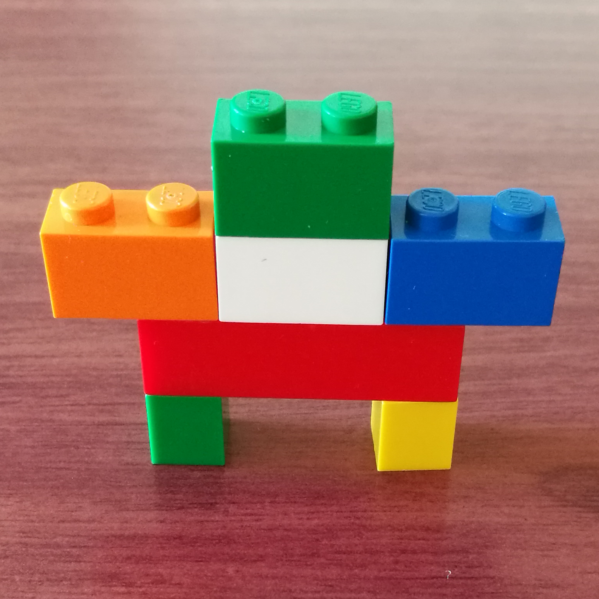
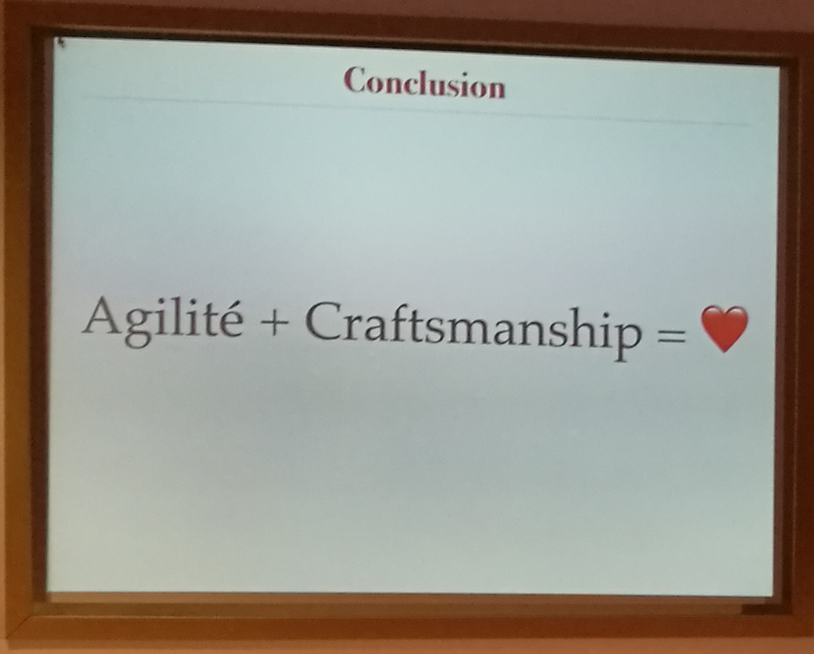

Restitution

Stands
Keynotes
Recruteur/Développeur, pour le meilleur et pour le pair
Shirley Almosni Chiche & Nathalie Ikedjian
Qu’est ce que tu fais dans la vie ?
Cérès Carton
Qui veut gagner une carrière de développeur
Jean François Garreau & CommitStrip
Comment les logiciels pourrisement ma vie
Antonin Le Mée
Des Lego, des bonnes pratiques et du fun !
Cécile Especel
Luigi: Le machine learning lui dit merci
Sandra Pietrowska & Antoine Michaud
Condensé de MOM illustré
Antonio Gomes Rodrigues & Safa Mabrouk
Domain Driven Architecture

Arnaud Lemaire
Des deux mondes de l'open source et de l'entreprise. Lequel des deux est une industrie ?
Nicolas Ledez & Cédric Patchane
Les problèmes que l'on rencontre en microservice: configuration, authentification et autre joyeusetés
Quentin Adam
CQRS, Fonctionel, Event Sourcing & Domain Driven Design
Arnaud Lemaire
Des applications Angular réactives avec RxJs
Wassim Chegham
Logging-driven development -- Parce que les "Logs are NOT JUST logs"
Guillaume Polaert
Hey Bob! Comment ça va ?
Philippe Charrière
Containers et configuration: de la promesse au concret avec git et confd
Christophe Furmaniak
Créer un bot, pas si simple. Faisons le point.
Stève Sfartz
REX : d'un monolithe à des microservices multitenants en Docker
Jean-Philippe Gouigoux
Comment hacker la webcam de ton voisin(e) ?
Charles Bochet
Comment ça marche systemd déjà?
Quentin Adam
Sentry: La chasse aux bugs est ouverte!
Nicolas Pennec
Patterns et antipatterns pour la gestion des cycles de vie des images Docker
Jonathan Roquelaure
Haskell for the noobs
Frédéric Menou
Développez des applications web desktop avec Electron
Eric Briand & Yvonnick Frin
Sinon, quoi de neuf côté Apache Groovy ?
Guillaume Laforge & Cedric Champeau
JWT in depth
Mathieu Pousse
JUnit 5 : Tests imbriqués dynamiques
Benoit Averty
Lao-Tseu, Software Craftsman
Gautier Mechling
Et Java 8 devient plus fonctionnel avec Javaslang
Guillaume Lours
Kanban from the startup warfare
Chéné Youen
Ici le commandant de bord, on passe en mode avion !
Olivier Leplus & Wassim Chegham
JOOQ et JOO? : Comment écrire du code propre dans vos DAO
Mathieu Gandin